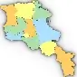
Ինչպես հասնել ՀայաստանՏրանսպորտ / Մուտքի տեղեկատվություն
Հայաստանը հասանելի է հիմնական տրանսպորտային միջոցներով՝ օդային, երկաթուղային և ավտոմոբիլային: Ջրային մուտք չկա, սակայն զարգացած ցամաքային կապերը հնարավորություն են տալիս հեշտությամբ այցելել երկիր:
- Օդային տրանսպորտ
- Տրանսպորտ դեպի քաղաք
- Երկաթուղի
- Կապ և հասցեներ
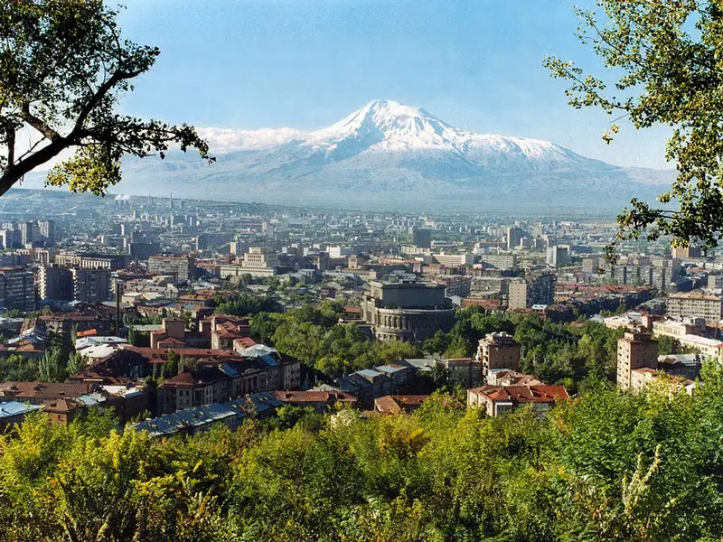
Օդային տրանսպորտ
«Զվարթնոց» միջազգային օդանավակայան և «Շիրակ»
օդանավակայան,
որ գործում է Գյումրիում։
Զվարթնոցը՝ Հայաստանի օդային դարպասը, ՀՀ գլխավոր
օդանավակայանն է՝ տեղակայված Երևանի կենտրոնից 12 կմ հեռավորության
վրա։ Օդանավակայանը սպասարկում է ուղիղ չվերթներ դեպի 50+
քաղաքներ՝ Եվրոպայից, Ասիայից և Մերձավոր Արևելքից՝
համագործակցելով ավելի քան
30 ավիաընկերության և 50+ ուղղության
հետ (Մոսկվա, Փարիզ, Վիեննա, Դուբայ, Ստամբուլ և այլն)։
Օդանավակայանն առաջարկում է ուղիղ չվերթներ աշխարհի ավելի քան 50 քաղաքներից՝ Լոնդոն, Փարիզ, Վիեննա, Մոսկվա, Դուբայ, Թեհրան, Ստամբուլ և այլն։ Գործում են նաև բյուջետային չվերթներ եվրոպական ուղղություններով՝ Վարշավա, Միլան, Բարսելոնա, Էյնդհովեն և այլն։
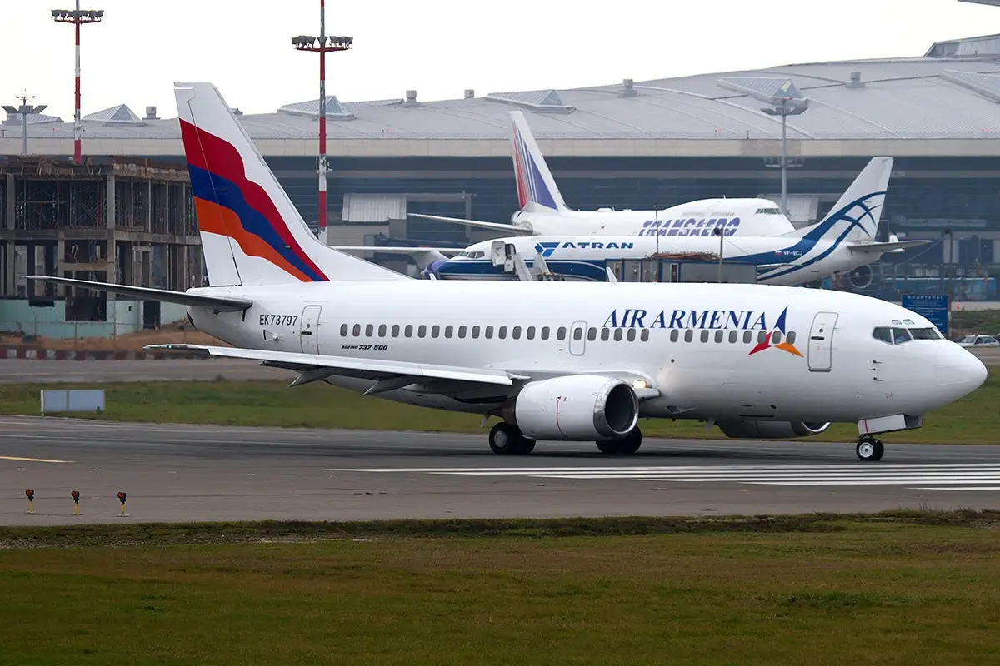
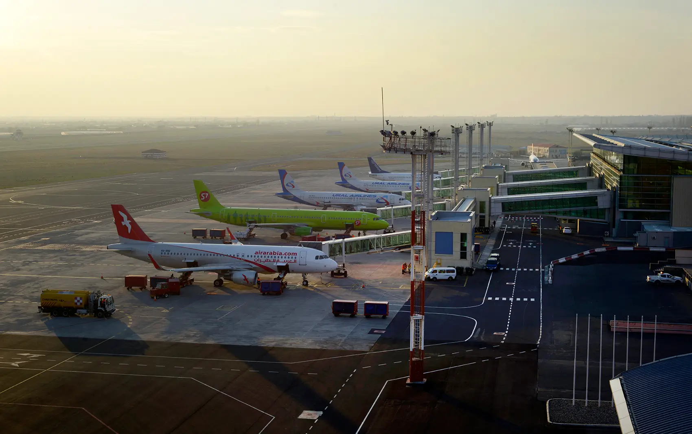
Ավիաընկերություններ՝ Aeroflot, Air France, Austrian Airlines, Fly Arna, Armenia Airways և այլն։ Հայաստանի ազգային փոխադրողներն են՝ Fly Arna և Air Armenia, որոնք իրականացնում են ուղևորափոխադրում և բեռնափոխադրում դեպի ԱՊՀ և Եվրոպա:
Ծառայություններ և հարմարություններ
- Duty-free խանութներ, սրճարաններ, ռեստորաններ
- Արժանահավատ Wi-Fi, հարմարավետ սպասասրահներ
- Zvartnots հավելված՝ թռիչքների real-time հետևման, վիզայի, ավտոկայանատեղիի և տոմսերի վերաբերյալ տեղեկությամբ
- Visa ստանալու հնարավորություն օդանավակայանում՝ ժամանելուն պես (մինչև 21 օր՝ 3,000 դրամ)
- Հատուկ VIP ծառայություններ՝ բիզնես ուղևորների և պատվավոր հյուրերի համար
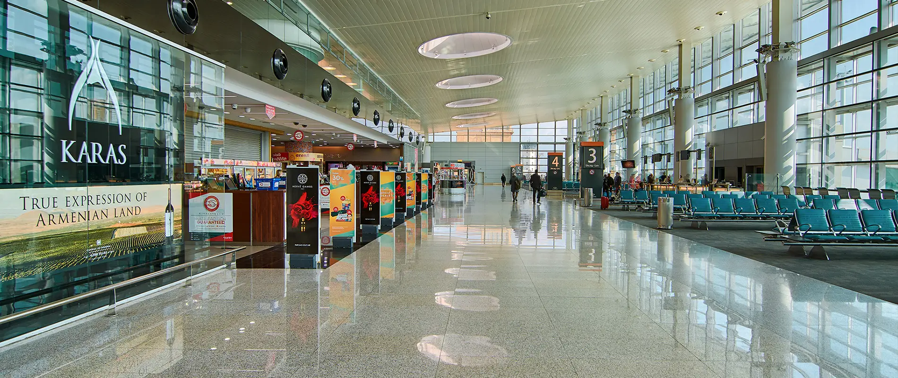
Օդանավակայանից տեղափոխում դեպի մայրաքաղաք Երևան
-
Էքսպրես միկրոավտոբուս
- Գիծ՝ № 201
- Ուղղություն՝ Զվարթնոց – Երևանի կենտրոն (Երիտասարդական կայարան, Հանրապետության հրապարակ)
- Արժեք՝ 300 դրամ
- Հաճախականություն՝ մոտավորապես 30 րոպե մեկ անգամ
- Աշխատանքային ժամեր՝ 07:00 - 22:00
- Կարող եք օգտվել հավելվածներից՝ GG, Yandex Go, Utaxi
- Ժամանակ՝ մոտ 20–30 րոպե, կախված երթևեկից
-
Տաքսի
- Գին՝ 2,000 – 4,000 դրամ (կախված երթուղուց)
-
Ավտոմեքենայի վարձույթ
- Մատչելի է օդանավակայանի ժամանման սրահում
- Պահանջվում է վարորդական վկայական
- Կայանատեղի՝ մինչև 600 ավտոմեքենա, 500 դրամ/ժամ, առաջին 10 րոպեն՝ անվճար
- Հուշում՝ Տաքսի ծառայություններից օգտվելիս խորհուրդ է տրվում նախապես պատվիրել հավելվածով՝ գինը պարզ տեսնելու և խարդախություններից խուսափելու համար։
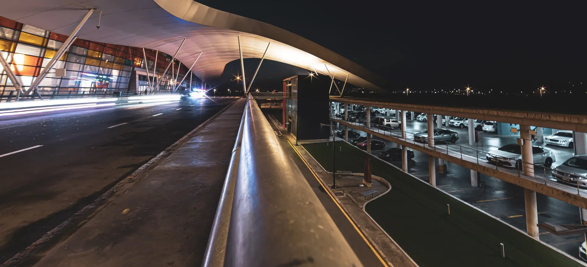
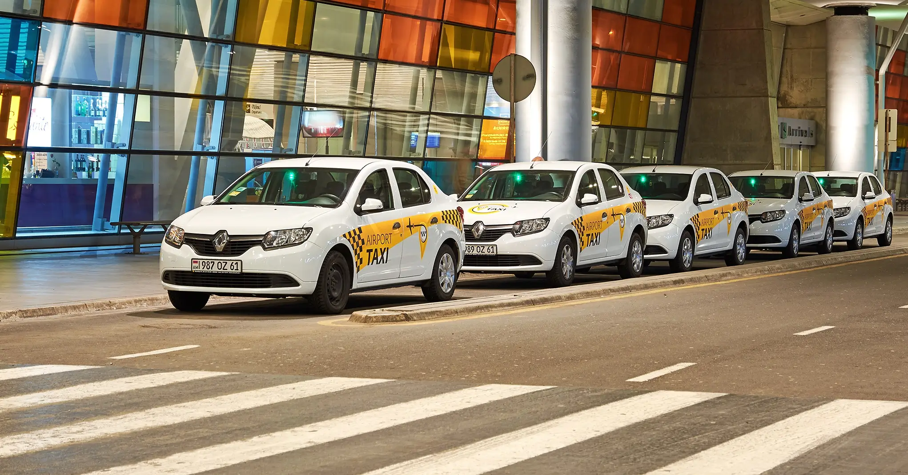
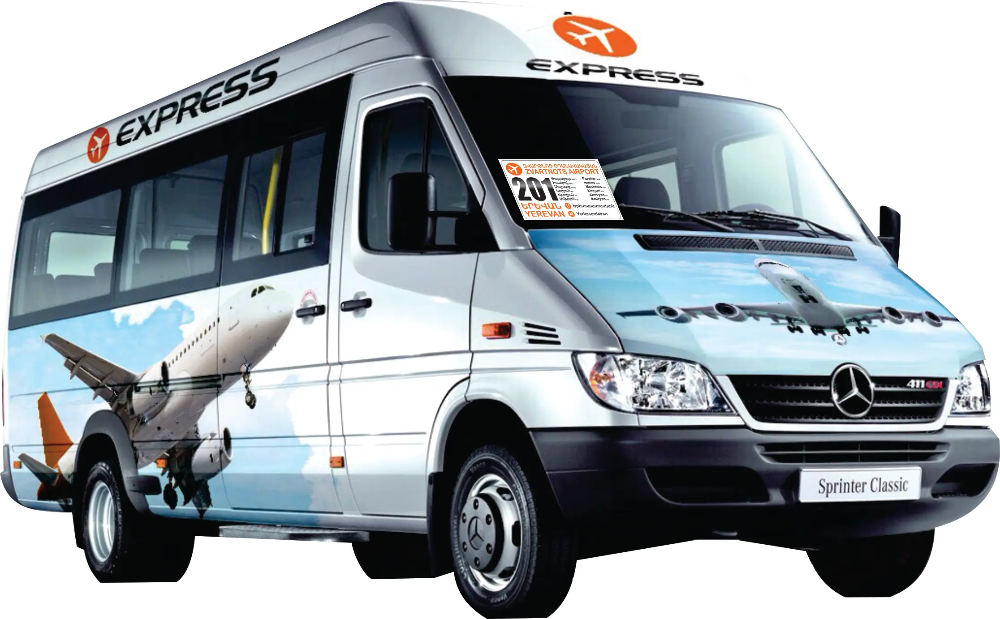
Կոնտակտ
- Օդանավակայանի կենտրոն՝ +374 10 493000, www.zvartnots.aero
- Կարճ համար՝ 1-87
- mfa.am/visa – վիզաների վերաբերյալ
- Տոմսերի որոնում և պատվերում՝ www.tickets.am
Վիզա կարելի է ստանալ տեղում, Զվարթնոցում, դիմում լրացնելով։
- 21 օր — 3,000 դրամ
- 120 օր — 15,000 դրամ
- Մինչև 18 տարեկաններին՝ անվճար
Ներբեռնեք Zvartnots հավելվածը՝ թռիչքների մասին տեղեկատվություն ստանալու և տոմսեր պատվիրելու համար
Երկաթուղային տրանսպորտ
Հայաստանում գործում է Հարավկովկասյան երկաթուղին, որն ապահովում է ուղևորափոխադրումներ դեպի Վրաստան։Գործում է շուրջ 725 կմ էլեկտրիֆիկացված գիծ։ Հիմնական կայարաններն են՝ Երևան, Գյումրի և Վանաձոր։ Ակտիվ միջազգային երթուղին՝
- Այրում – Սադախլո (Վրաստան)
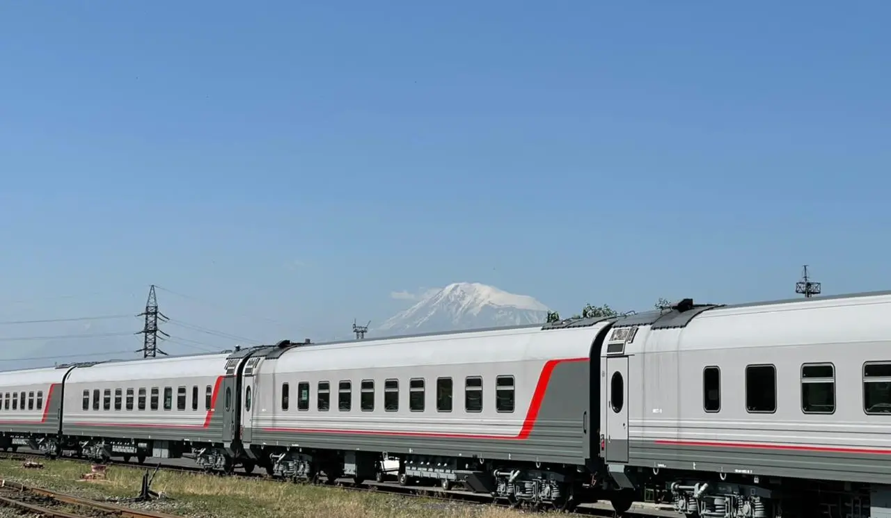
Երևանի երկաթուղային կայարան (Սասունցի Դավիթ)
Երևանի գլխավոր երկաթուղային կայարանը, որը կրում է էպիկական հերոսի՝ Սասունցի Դավթի անունը, գտնվում է Տիգրան Մեծի պողոտայում։ Արձանը՝ Դավիթը՝ ձիու վրա, սուրը ձեռքին պահած, կանգնած է կայարանի դիմաց՝ իբրև համազգային տոկունության և ոգեշնչման խորհրդանիշ։Երևանի Սասունցի Դավիթ երկաթուղային կայարանը սպասարկում է ուղևորափոխադրումներ՝ դեպի Վրաստան և երկրի ներսում:
Երևանի կայարանում գործող ծառայություններ.
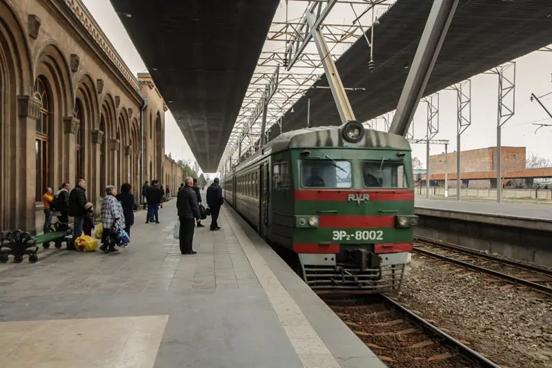
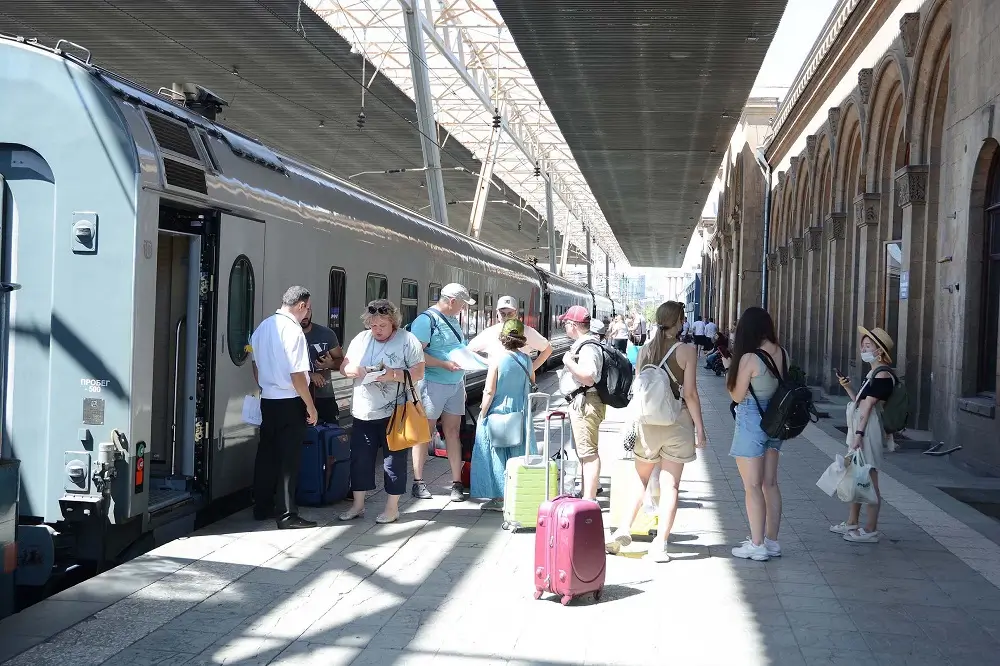
- Միջազգային և մերձքաղաքային սրահներ
- VIP սենյակներ և հանգստի սենյակներ
- Բանկոմատ, Wi-Fi, սուրճի ապարատ
- Տեղեկատու աշխատակիցներ, զբոսաշրջային տեղեկատվական կետ
- Տոմսերի վաճառք՝ դեպի Ռուսաստանի տարբեր քաղաքներ (АСУ «Экспресс»)
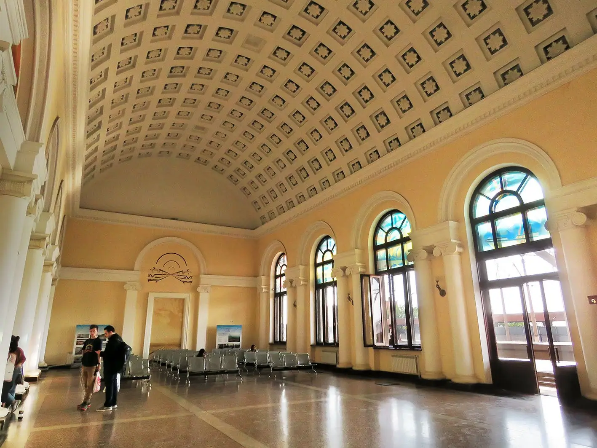
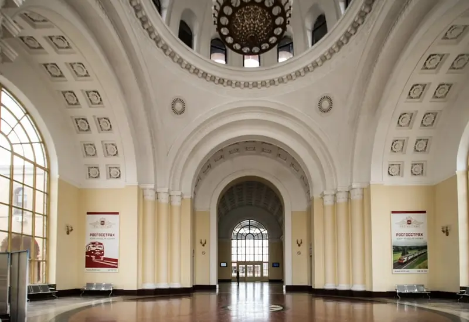
Խորհրդանշան՝ Սասունցի Դավթի հեծյալ արձան
Թանգարան՝ Հայաստանի երկաթուղու պատմությանը նվիրված, անվճար մուտքով
Գծերը՝ դեպի Վրաստան, ներքին ուղևորափոխադրումներ
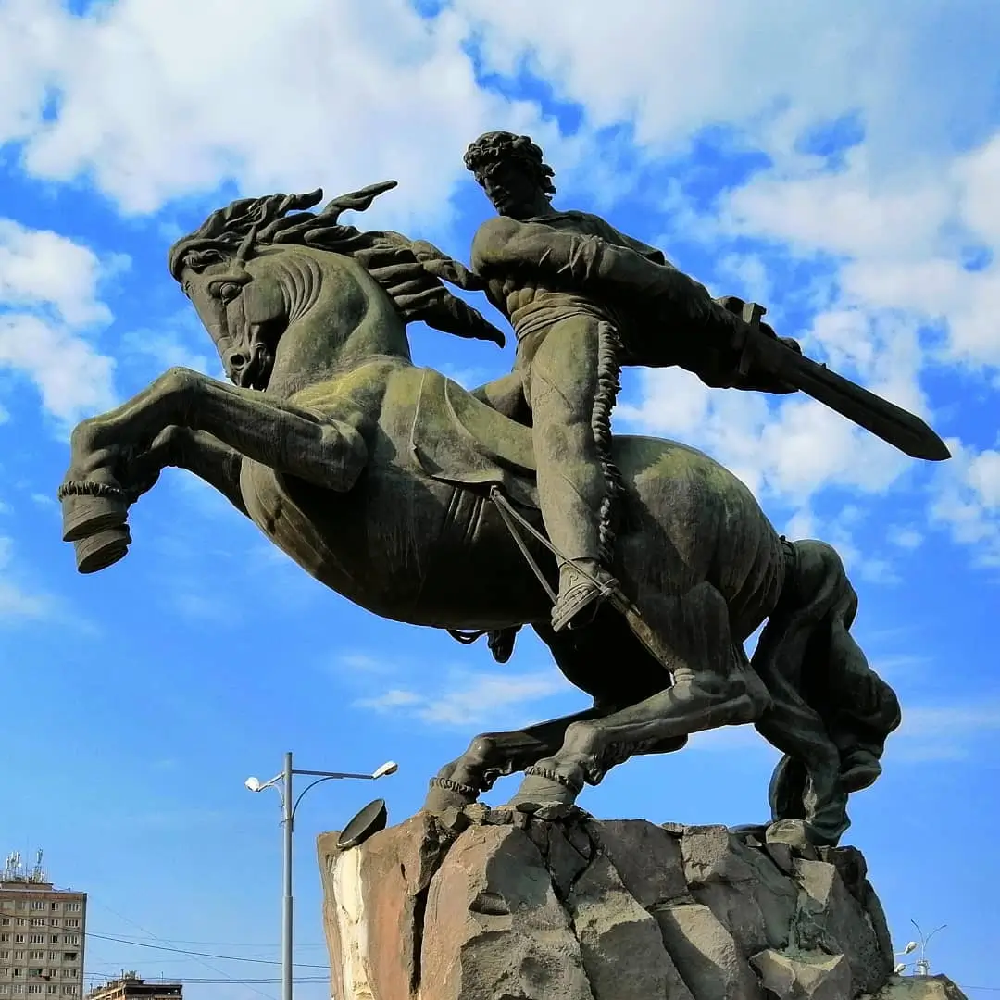
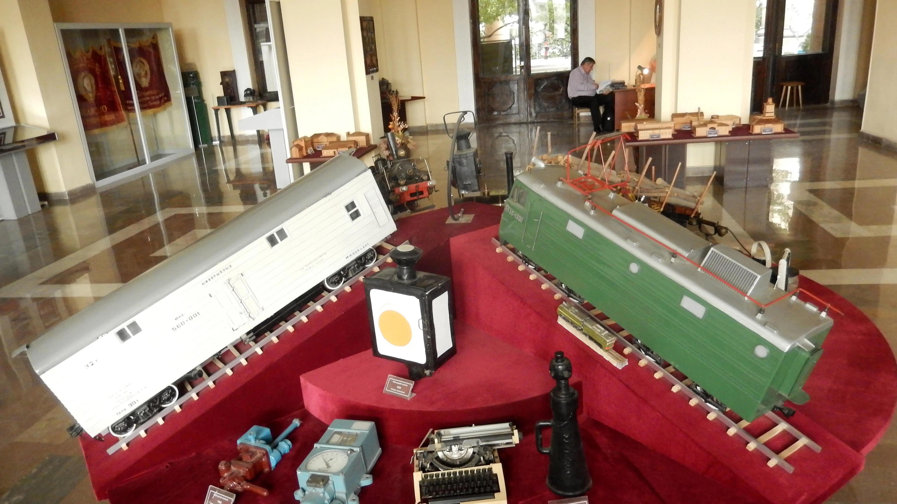
Երևանից դեպի Վրաստան՝ երկաթուղային կապով
- Ուղևորությունները սկսվում են Երևանի Սասունցի Դավիթ կայարանից
- Գնացքները շարժվում են դեպի Թբիլիսի, գիշերային երթևեկով
- Մատչելի ու հարմար տարբերակ է ճանապարհորդության համար
Ճամփորդե՛ք Սասունցի Դավթի ուղիով
- Հասցե՝ Երևան, Տիգրան Մեծի պողոտա 80
- Տեղեկատու՝ 1-84 / +374 60 46 32 84
- Բաց է՝ 24/7, տեղեկատուն՝ ամեն օր 07:30–19:30
- Տոմսարկղ՝ բաց է ամեն օր